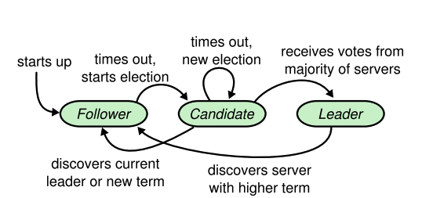
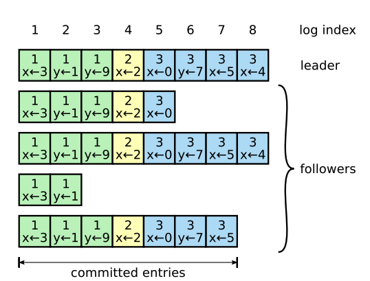
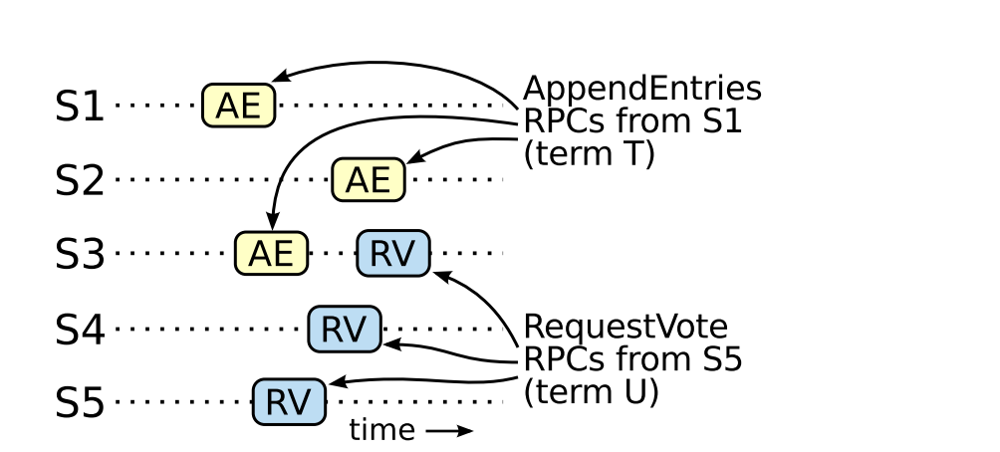

Consensus algorithm arise in the context of Replicated State
Machines; where we required to maintain same state on multiple
servers
Consensus algorithm helps
A collection of machines to work as a coherent(सुसंगठित) or a single
logical group
Algorithm brings
Consistency: Ensuring that all machines in the system agree on the
same state despite failures
Availability: Allowing the system to remain operational despite
failures of individual servers.
Partition Tolerance: Handling network partitions gracefully without
compromising the system’s operation.
What are the benefits from such an algorithm ?
Ensures the reliability of large-scale software systems.
Makes hardware faults invisible to the client.
What is RAFT ?
I’m a consensus algorithm designed to ensure consistent replication
of logs across servers
Much easier to understand compare to classic consensus algo
Paxos (by Leslie Lamport)
Paxos is complex to understand + less intuitive; RAFT is easier to
understand (Breakdown to smaller problems)
Replicated State Machines
alt text
What is Replicated State Machine ?
Some initial state S
Log (or command)
Apply log on state
s[i]:log[i] ->
s[i + 1]
What does logs contains ?
Sequence of commands
Each compute/server contains commands in the same sequence
order
Properties of State Machine
Deterministic
Initial State S; apply log L; Final State D
Hallucination to Client!!
Once commands are properly replicated, each server’s state machine
processes them in log order, and the outputs are returned to
clients
RAFT make client believe server as a single, highly reliable state
machine
Must-have
properties of a consensus algorithm
What guarantee RAFT provides ?
Safety
Never return an incorrect result (under all non-Byzantine
conditions)
Available
As long as majority is there (n / 2 + 1)
Not depend on Timing
Independent of timing to ensure the consistency. Why ?
Faulty clocks
Extreme message delays
In the common case, a command can complete as soon as a majority of
the cluster has responded to a single round of RPC
This avoids a minority of slow server to impact the performance
Main GOAL of RAFT ?
MUST
Provide complete and practical foundation for system building
Safe under all operating conditions
Apart from MUST the MAIN goal of
RAFT was Designing for Understandability
PAXOS is complex, Raft is simpler
Raft simplify the state space by reducing the number of states to
consider
Makes system more coherent
Eliminating non-determinism wherever possible
At some places it helped (randomization helped Raft leader election
algorithm)
What are the claims by RAFT ?
Strong leader
Flow of log entry only from leader to other servers (followers)
which simplifies the management of logs
Leader Election
Randomized timers to resolve conflicts (else indefinite
waiting)
Membership change
The Raft Consensus Algorithm
To implement consensus what does Raft do ?
Electing distinguished leader (two leader for same term
can’t exists)
Information flow is always from leader to followers; client always
talks with leader
Leader accepts logs from client and replicate them on other
server
Leader tells servers when it is safe to apply log entries to their
state machines
Benefits from leader-follower concept ?
Leaders simplify the data flow
What if leader goes down?
If leader gets disconnected/fails; then a new leader got
elected
Decomposition of Consensus
Problem
Think your self ? - You always need a leader, and that leader should
always replicate the log. Also, the leader will become angry if some
other leader from the future changes its committed entries.
Leader Election
Leader keeps the Raft alive; if leader goes down, we need to pick a
new leader
Log replication
Replication save you from sudden failures in your system e.g. hard
disk crash, network goes down, somebody plug out the cables
Leader must accept log entries from client and replicate them across
the cluster
Force other logs to agree with its own
Safety (Once it’s served, it’s served. No taking back)
State Machine Safety
If any server has applied a particular log entry to it state
machine, then no other server may apply a different command for the same
log index
Ensured through election restrictions
Raft Guarantees - True at
all times!
Election Safety
At most one leader in a given term T
Leader Append-Only
A leader never overwrites or deletes entries in its own log; it only
append new entire
Log Matching
If two logs contains an entry with the same index and term, then the
logs are identical in all entries up through the given index
Leader Completeness
If a log entry is committed in a given term, then that entry will be
present in the logs of the leaders for all higher-numbered term
State Machine Safety
If a server has applied a log entry at a given index to its state
machine, no other server will ever apply a different log entry for the
same index
Raft Basics
Raft cluster consists of servers (typically 5 servers)
Survive two server failures
At a given time server is in three states
Leader
Follower
Candidate

alt text
Normal scenario
one leader, rest all are followers
Client always talks with leader
If client talks with a follower, the follower redirect client to the
leader
Raft divides times into terms of arbitrary length
Term acts as logical clocks
Helps servers to detect obsolete information such as stale
leaders
alt text
Terms are numbered with consecutive integers
Each term begin with an election, in which one or more candidate
attempts to become leader
If candidate wins, then leader for the entire term
If Split votes then no leader for the term (term++; election
again)
Raft ensures that there is at most one leader each
term
Transition b/w terms may be observed at different times
Raft server communicate using RPCs
Three type of RPCs
RequestVote RPCs (by candidates)
AppendEntries RPCs (by leader to replicate log entries and to
provide a form of heartbeat)
RPC for transferring snapshots between servers
Server retry the RPC if do not receive a response in a timely manner
and for performance: parallel RPCs

alt text
Leader Election
All server startup as followers
Remains in followers as long as it receives valid RPCs from a leader
or candidate
Leader send periodic heartbeat (AppendEntries RPCs with no
logs)
If follower receives no communication till the election
timeout, then it assumes there is no viable leader and begins an
election to choose a new leader
To begin an election
Follower increment its current term to
currentTerm + 1
Vote to itself (self obsessed)
Issue RequestVote RPCs in parallel to each of the
other servers in the cluster
Loop in same state until
Wins
Got majority of votes
Loose
Another server establishes itself as leader
Draw
No winner
How RAFT decrease the probability of split votes(विभाजित मत)
?
Raft uses randomized election timeout to ensure that split
votes are rare
In later section we will see a bounded range for this randomized
election timeout. If not selected carefully it can affect the
liveness/performance of the Raft
Two strategy
First
Set timeout randomly from a fixed range i.e [150-300ms]
This will ensure that not every one will timeout together
Second (candidate side)
Each candidate restarts it randomized election timeout at the start
of an election, and it waits for that timeout to elapse before starting
a new election ## State of a Server
Persisted state on all servers (before
responding to RPCs)
currentTerm
Latest term server has seen
Initialize to 0 on first boot, increase monotonically
Used to ensure that terms only increase, & to detect RPCs from
stale leaders & candidates(logical clock)
votedFor
Candidate that received vote in current term (or null if none)
If it didn’t store to whom it voted for current term, then there is
a possibility of submitting vote twice in same term. This could lead to
two leaders in the same term(breaks election safety).
log[]
Log entries
Each entry contains (command for state machine, term when entry was
received)
One-based indexing
If the server is in leader’s majority for committing an entry, must
remember entry despite reboot, so that any future leader is guaranteed
to see committed log entry (ensure leader completeness property).
Moreover, logs play a crucial role in electing leader for a given
term.
Volatile state on all server
commitIndex
Index of highest entry known to be committed (init = 0; increase
monotonically)
why not persist ? Supplied from the leader
lastApplied
Index of highest log entry applied to the state machine (init = 0;
increase monotonically)
why not persist ? Computed locally, equals to the index till which
logs are applied to state machine (<=commitIndex)
Volatile state on leaders
nextIndex[]
For each server
Index of the next log entry to send to that server
Init = leader last log index + 1
matchIndex[]
For each server
Index of highest log entry known to be replicated on server
init = 0; increase monotonically
why not persist ? computed based on responses received for
AppendRPCs sent to the followers
why different nextIndex & matchIndex ?
they have a different usecase nextIndex is used for sending log
entries to the follower
whereas matchIndex is used by the leader for committing log entries
## AppendEntries RPC Invoked by leader to replicate log entries + heart
beats
Arguments
Meaning
term
leader’s term
leaderId
so follower can redirect clients
prevLogIndex
index of log entry immediately preceding new ones
prevLogTerm
term of prevLogIndex entry
entries[]
log entries to store (empty in case of heartbeat)
leaderCommit
leader’s commitIndex
Results
Meaning
term
currentTerm, for leader to update itself
success
true if follower contained entry matching prevLogIndex
and prevLogTerm
Receiver Implementation 1. Reply false
if term < currentTerm. - This means that if the leader
is operating on an older term than the server’s current term, return
false. 2. Reply false if the log does not contain an entry
at prevLogIndex with a term that matches prevLogTerm. - This ensures
that the server logs can synchronize with the leader’s logs. 3. If an
existing entry conflicts with a new one (same index but different term),
delete the existing entry and all entries that follow it. - There is a
single source of truth, and the current leader defines that truth. -
Append any new entries that are not already in the log. - If
leaderCommit > commitIndex, set commitIndex
to min(leaderCommit, index of the last new entry). - Why
safe ?
RequestVote RPC
Invoked by candidates to gather vote
Argument
Meaning
term
candidate’s term
candidateId
candidate requesting vote
lastLogIndex
index of candidate’s last log entry
lastLogTerm
term of candidate’s last log entry
Results
Meaning
term
currentTerm, for the candidate to update itself
voteGranted
true means candidate received vote
Receiver Implementation 1. Reply false
if term < currentTerm 2. If
votedFor == null or candidateId, and
candidate’s log is at least as up-to-date as receiver’s log, grant
vote
Rules for Servers
All servers - If
commitIndex > lastApplied, then increment
lastApplied, apply log[lastApplied] to state
machine - If RPC request or response contains term
T > currentTerm set currentTerm = T,
convert to follower
Followers - Respond to RPCs from candidates and
leaders - If election timeout elapses without receiving AppendEntries
RPC from current leader or granting vote to candidate: convert to
candidate
Candidates - What happen in Candidate state ? - On
conversion to candidate, start election: - Increment
currentTerm - Vote for Self (self-obsessed) - Reset
election timer - Send RequestVote RPCs to all other servers - If vote
from majority (promote to leader) - If AppendEntries RPC received from
new leader: convert to follower - If election timeout elapses: start new
election
Leaders - How leader prevents election timeouts ? -
Upon election: send initial empty AppendEntries RPCs (heartbeat) to each
server - When does leader response back to the client ? - If command
received from client: append entry to local log, respond after entry
applied to state machine - What does leader do to bring every followers
logs[] in sync? - If Leader last log index is greater than
nextIndex of some follower f
i.e. len(leader_log) > nextIndex[f]; send AppendEntries
RPC with log entries starting at nextIndex[f] - If
successful: Update nextIndex[f] and
matchIndex[f] for the follower f - If fails because of log
inconsistency then,
java // Follower: appendEntryRequest(rpcPayload={ni=nextIndex[f], newLog,..}) { if (logOfFollower[ni - 1] != logOfLeader[ni - 1]) { reply("Prefix of log not matching") } else { append(logOfFollower, newLog); } }
- In the above case, leader will decrement nextIndex and retry again -
When does leader update its commitIndex ? - If there exists
an N such that N > commitIndex (consider N
as length of log at the leader) - And a majority of
matchIndex[f] >= N - And
log[N].term == currentTerm - then set
commitIndex = N
Logs Replication
Client request contains a command to be executed by the replicated
state machine
The leader append the command to its log as a new entry, then issue
AppendEntries RPCs in parallel to each of the other server
to replicate
When safely replicated, the leader applies the entry to its state
machine and returns the result of that execution to the client
If followers crash or run slowly, or if network packets are lost,
the leader retries AppendEntries RPCs indefinitely (even after it has
responded to the client) until all followers eventually store all log
entries
Each log entry stores (term number, command)
Why term number ?
Helps to detect inconsistency in the logs
When does leader feels safe to apply a log entry to its state
machine ? > Applied log entry are referred as committed
A log entry is committed once the leader that created the entry has
replicated it on majority of servers
All preceding entries in the leader’s log, including entries created
the previous leader
When does followers feels safe to apply a log entry ?
Leader keeps track of the highest index it knows to be committed,
and it include that index in future AppendEntries RPCs(including
heartbeats) so that the other server eventually find out
Once a follower learn that a log entry is committed, it applies the
entry to its local state machine
Properties maintains by the RAFT
If two entries in different logs have the same index and term, then
they store the same command
If two entries in different logs have the same index and term, then
the logs are identical in all preceding entries
alt text
Leader handles inconsistencies by forcing the followers’ logs to
duplicate its own
Conflicting entries will be overwritten with entries from the
leader’s log
leader maintains nextIndex for each follower
To what value new leader initialize nextIndex?
for each follower f:
nextIndex[f] = len(leader_log) + 1
Safety
How to sure that each state machine executes exactly the same
commands in the same order ?
Constraints at the Leader election : because we don’t want a stale
follower to become leader and overwrite entries
Election restriction
In a leader-based consensus algorithm, the leader must eventually
store all of the committed log entries
How does Raft guarantee above ?
Raft use simple approach without the need to transfer those
entries to the leader
Log entry only flow in one direction, from leaders to
followers
Example:
alt text
Raft uses the voting process to prevent a candidate from winning
an election unless its log contains all committed entries
Voter denies its vote if its own log is more up-to-date than that
of the candidate
How does Raft determines which of two logs is more up-to-date ?
Comparing the index (len(log)) and term of
the last entries in the logs
If the logs have last entries with different terms, then the log
with the later term is more up-to-date
If the logs end with the same term, then whichever log is longer is
more up-to-date
Committing entries from
previous terms
Is it ok for the leader to commit all the uncommitted entries from
its log ?
A big no!!
Chances are that committed entries may get overwritten by a future
leader
Leader doesn’t change the term value present in the logs from
previous leaders term
Only log entries from the leader’s current term are committed by
counting replicas;
Once an entry from the current term has committed in this way, then
all prior entries are committed indirectly because of the Log Matching
Property > Even when you have replicated on all the server (you are
fully sure to commit), but still Raft takes conservative approach for
simplicity
Safety argument
Argue on Leader Completeness Property
Assume it doesn’t hold, then we prove a contradiction
Suppose the leader for term T commits a log entry from its term, but
that log entry is not store by the leader of some future term. Consider
the smallest term U > T whose leader doesn’t store the entry
Committed entry must have been absent from leader U log at the time
of its election
Leader T replicated the entry on a majority of the cluster, and the
leader U received votes from a majority of the cluster. Thus, at least
one server (“the voter”) both accepted the entry from leader T and voted
for Leader U
Voter is key to reaching a contradiction

alt text
The voter must have accepted the committed entry from leader_t
before voting leader_u; other wise this server have rejected the
AppendEntries RPC request from the leader_t
The voter granted its vote to leader_u, so leader_u’s log must have
been as up-to-date as the voter. This leads to one of two
contradiction
First, the voter and U must shared the same last log term and U logs
length is at least as long as voters
Contradiction to our assumption i.e U doesn’t contains committed
entry
Otherwise, leader’s U last log term must have been larger than voter
precise : It should be larger than T
Remember Leader completeness property : it means logs of U must
contains T committed entry, which is a contradiction
Failure Scenarios
Follower and candidate Crash
Much easier to handle compare to leader crashes
Failure for both are handled in the same way
All RequestVote and AppendEntries RPC will be sent to it will
fail
Raft handles these failures by retrying indefinitely
Raft RPCs are idempotent, so this case no harm
Follower just ignore
Scenarios: If server crashes after completing an RPC but before
responding
Timing and availability
Initial requirement: Safety must not depend on the timing;
The system must not produce incorrect results, just because some
event happens more quickly or slowly than expected
However, availability (the ability of a system to respond to client
in timely manner) must inevitably depend on timing
Raft rely on a steady leader to progress
If message exchanges take longer than the typical time between
server crashes, candidate will not stay up long enough to win an
election
Leader election is the aspect in Raft where timing is important
Raft will be able to elect and maintain steady leader as long as
system satisfies the below timing requirements
broadcastTime << electionTimeout << MTBF
broadcastTime: Avg time it takes server to send RPCs in
parallel to every server in the cluster and receive there response
MTBF: Mean Time Between Failures
If electionTimeout < broadcastTime; then no body
will win the election;
If electionTimeout > MTBF; then progress will halt,
as there is no election happen even after leader crashed
Typical electionTimeout Raft set is
[10, 500]ms
Cluster membership change
Above discussion was on assumption that cluster configuration is
fixed
In practice, it is not the case and cluster configuration change
over time
Replace server when they fail or change the degree of
replication
We want to do above without the requirement of restart
For the configuration change mechanism to be safe,
No point in transition where it is possible for two leaders to be
elected
Unfortunately, any approach where server switch directly from the
old configuration to the new configuration is unsafe
It isn’t possible to atomically switch all server
at once (which means chances are that cluster can potentially split into
two independent majorities during the transition)
In order to ensure safety, configuration changes must use a
two-phase approach
In Raft the cluster first switches to a transitional configuration
we call joint consensus; once the joint consensus has been
committed, the system then transition to the new configuration
The joint consensus combines both new and old configurations:
Log entries are replicated to all servers in both configuration
Any server from either configuration may serve as leader
Agreement (for election and entry commitment) requires separate
majorities from both the new and old configuration
Join consensus allows servers
Transition between configuration at different time without
compromising safety
Keeps system alive i.e client request are served even when
configuration changes are in transitions
Cluster configuration are stored and communicated using special
entries in the replicated log
When a leader receives the configuration change request to change
from Cold
to Cnew
it stores the configuration for the joint consensus (Cold, new)
as a log entry and replicate that
Once a server adds a new configuration to its log, then it uses the
same for all future decisions (regardless of that is committed or not,
but why it is safe to use that?)
alt text
Log compaction
Remove obsolete information with time to avoid space wastage
Snap shotting is the simplest technique for compaction
Entire system state is written on a stable storage, then entire log
up that point is discarded (as well as older snapshots)
alt text
In raft each server takes snapshot independently, covering just the
committed entries in its logs
Raft also include small metadata into its snapshot
Although server must takes snapshot independently, the leader must
occasionally send snapshots to followers that lag behind
alt text
Snapshotting approach departs from Raft’s strong leader principle,
since followers can take snapshots without the knowledge of the
leader
Consensus has already been reached when snapshotting, so no decision
conflicts.
Client Interaction
Conclusion (Author of paper)
What I learned from this paper
?
Centralized (leader/master) vs decentralized tradeoffs
If centralized, then how to handle the crash of leader/master
If decentralized, then how to make sure every one has consistent
information or every one is in sync about the overall state of the
system ?
Network partitions - No communication possible ? sacrifice either
availability or consistency
Stragglers - One slow machine should not effect system
Keep system least dependent on timings of event (events are
non-deterministic)
State (persist) vs Stateless (only in-memory) [ not truly stateless
]
Only keep state wherever necessity; stateless systems are more
tolerant to fault because there recovery is simple.
How to maintain consistency in distributed system, where we have
replication
How to ensure availability of system ?
Share state if a server is lagging / new server added
Tradeoff b/w Independent snapshots at each server Vs Leader
instructed logs